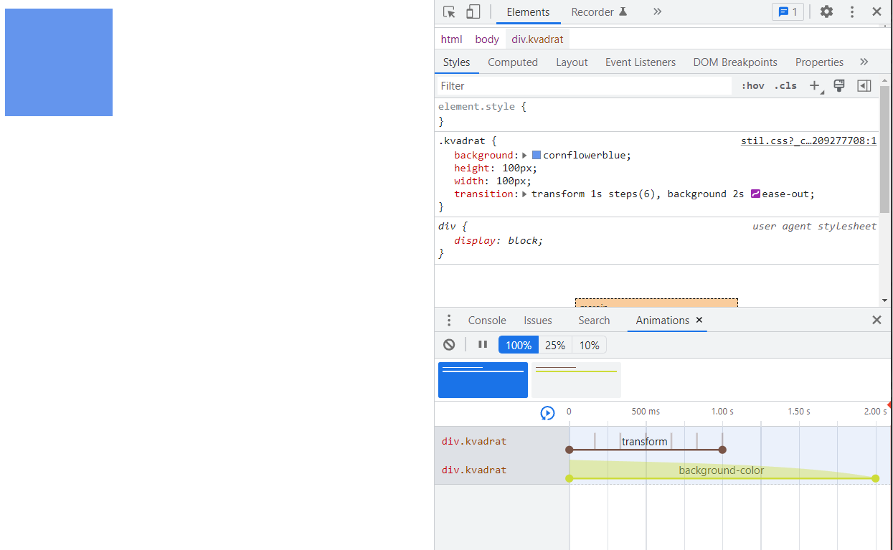
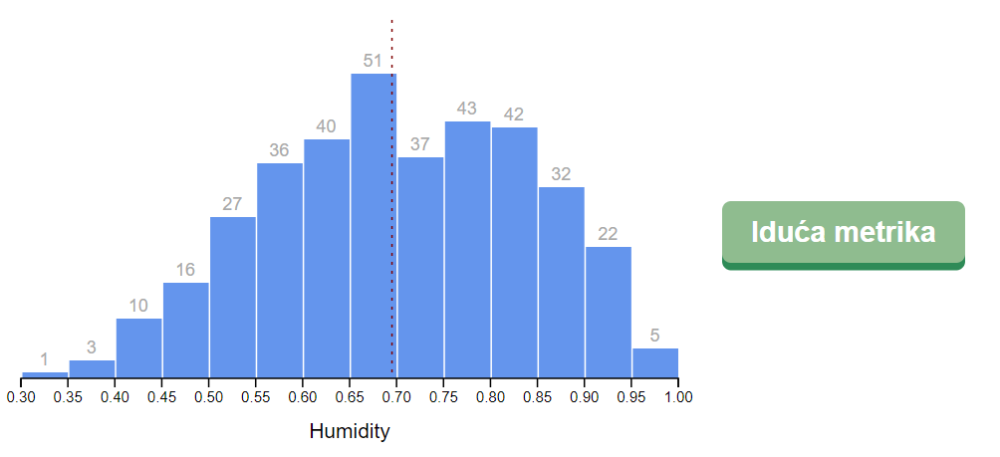
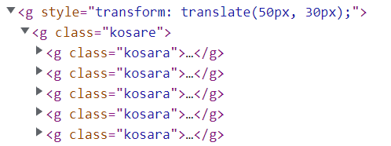
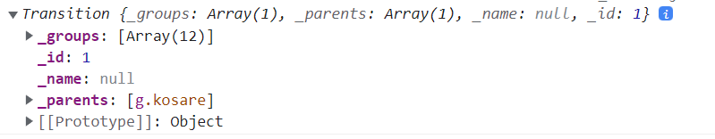

Vizualizacija podataka
Vježba 04
Vježba 04
- Vidjeli smo na primjerima iz prethodnih vježbi kako možemo mijenjati/osvježavati podatke koje prikazujemo
- U takvim slučajevima je korisno animirati promjenu elemenata tj. prijelaz sa stare vrijednosti na novu
- Postoji nekoliko načina kako animirati naše grafove
- korištenjem SVG elementa <animate>
- korištenjem CSS svojstva transition
- korištenjem metode d3.transition()
SVG <animate>
- Započet ćemo sa SVG <animate> elementom
- otvorite datoteku "index.html" iz mape "primjer01"
- imamo početni SVG <rect> element
- SVG <animate> element se može dodati unutar elementa kojeg želimo animirati
- dodati ćemo animaciju kretanja po x osi
<svg width="120" height="120">
<rect x="10" y="10" width="100" height="100" fill="cornflowerblue">
<animate
attributeName="x"
values="0;20;0"
dur="2s"
repeatCount="indefinite"
/>
</rect>
</svg>SVG <animate>
- Elementu možemo dodati i više animacija
<svg width="320" height="320">
<rect x="100" y="100" width="100" height="100" fill="cornflowerblue">
<animate
/>
<animate
attributeName="fill"
values="cornflowerBlue;maroon;cornflowerBlue"
dur="6s"
repeatCount="indefinite"
/>
</rect>
</svg>- SVG <animate> nije podržan od strane svih preglednika
- Moramo zadati statičke vrijednosti početka i kraja
- želimo animirati promjene između dinamičkih vrijednosti
CSS transition
- Promjene grafa možemo animirati CSS svojstvom transition
- Kada osvježimo boju <rect> elementa iz plave u crvenu možemo odrediti da promjena traje 10 sekundi
- element će automatski prikazati međuvrijednosti
- Naravno, ne mogu se sve promjene animirati
- Otvorite mapu "primjer02" u kojoj imamo HTML i CSS datoteke
- u CSS-u imamo zadano oblikovanje div elementa
.kvadrat {
background: cornflowerblue;
height: 100px;
width: 100px;
}CSS transition
- Dodati ćemo pseudo-klasu :hover na naš element i promijeniti oblikovanje elementa - druga boja i translacija po x osi
- Kako promjena ne bi bila trenutna, moramo dodati svojstvo transition-duration na cijeli element
.kvadrat {
background: cornflowerblue;
height: 100px;
width: 100px;
transition-duration: 1s;
}
.kvadrat:hover{
background-color: yellowgreen;
transform: translateX(30px);
}CSS transition
- Ako želimo instant promjenu boje, a postupno pomicanje to možemo kontrolirati sa svojstvom transition-property
.kvadrat {
background: cornflowerblue;
height: 100px;
width: 100px;
transition-duration: 1s;
transition-property: transform; /* "all" je zadana vrijednost */
}- Naravno, isti učinak možemo postići i sa skraćenim zapisom transition koji prima tri vrijednosti - svojstvo, trajanje i vrsta animacije
.kvadrat {
background: cornflowerblue;
height: 100px;
width: 100px;
transition: transform 1s steps(6);
}CSS transition
- Istom elementu možemo definirati i različite tranzicije
- ako želimo imati jednu vrstu animacije za promjenu položaja, a drugu za promjenu pozadine - dovoljno je napisati dva izraza odvojena zarezom
.kvadrat {
background: cornflowerblue;
height: 100px;
width: 100px;
transition: transform 1s steps(6), background 2s ease-out;
}CSS transition
- Chrome Dev Tools ima ugrađeni alat za pregled animacija
- dok je otvorena "Elements" kartica pritisnite tipku "ESC" na tipkovnici kako bi otvoriti donji izbornik
- u njemu otvorite karticu "Animations"

Animiranje grafa
- Sada ćemo pogledati kako iskoristiti CSS transition svojstvo za animiranje grafova koje smo napravili pomoću d3.js
- Otvorite mapu "primjer03" koja sadrži već poznate datoteke:
- index.html - uključivanje CSS i JS te prazni div "okvir"
- bar_domaci.js - rješenje prethodnog domaćeg
- stil.css - oblikovanje stranice
- Za početak ćemo pokrenuti primjer i vidjeti kako radi stranica:
- za razliku od domaćeg ne iscrtavamo sve grafove odjednom nego uz pomoć button elementa prelazimo na idući...

Animiranje grafa
- U odnosu na prethodne vježbe možemo izdvojiti par noviteta
- prilikom dodavanja SVG <g> elemenata dodjeljujemo im class atribute kako bi ih mogli oblikovati pomoću CSS-a
/* staticki elementi grafa */
granice.append("g")
.attr("class", "kosare")
granice.append("line")
.attr("class", "prosjek")
granice.append("g")
.attr("class", "x-os")
.style("transform", `translateY(${dimenzije.grVisina}px)`)
.append("text")
.attr("class", "x-os-oznaka")
Animiranje grafa
- Druga zanimljivost je način osvježavanja podataka
- odabiremo sve pojedinačne "košare" i pridružujemo novi skup podataka
- uklanjamo košare koje više nisu u skupu podataka
- dohvaćamo nove podatke i dodajemo iz u zajedničku grupu
- stvaramo prazne <rect> i <text> elemente za svaku košaru
- spajamo nove elemente sa postojećom selekcijom
let sveKosare = granice.select(".kosare")
.selectAll(".kosara")
.data(kosare)
sveKosare.exit().remove()
const noveKosare = sveKosare.enter().append("g")
.attr("class", "kosara")
noveKosare.append("rect")
noveKosare.append("text")
sveKosare = noveKosare.merge(sveKosare)Animiranje grafa
- Nakon pridruživanja novih podataka, izračun veličine stupaca i dodavanje oznaka je gotovo identično kao prije...
sveKosare = noveKosare.merge(sveKosare)
const stupciGrafa = sveKosare.select("rect")
.attr("x", d => xSkala(d.x0) + barPadding)
.attr("y", d => ySkala(yAccessor(d)))
.attr("width", d => d3.max([0, xSkala(d.x1) - xSkala(d.x0) - barPadding]))
.attr("height", d => dimenzije.grVisina - ySkala(yAccessor(d)))
const stupacTekst = sveKosare.select("text")
.attr("x", d => xSkala(d.x0) + (xSkala(d.x1) - xSkala(d.x0)) / 2)
.attr("y", d => ySkala(yAccessor(d)) - 5)
.text(yAccessor)
const srVr = d3.mean(dataset, metrikaAccessor)
const srednjaPravac = granice.selectAll(".prosjek")
.attr("x1", xSkala(srVr))
.attr("x2", xSkala(srVr))
.attr("y1", -20)
.attr("y2", dimenzije.grVisina)Animiranje grafa
- Promjena metrika nam radi ali bez animacije
- iskoristiti ćemo transition svojstvo nad rect elementima
.kosara rect {
fill: cornflowerblue;
transition: all 1s ease-out;
}- Vizualno izgleda zanimljivo ali želimo naglasiti promjene u visini i y poziciji stupaca
.kosara rect {
fill: cornflowerblue;
transition: height 1s ease-out, y 1s ease-out;
}*Neke verzije Firefox preglednika ne podržavaju height SVG elementa kao CSS svojstvo
Animiranje grafa
- Ako pokušamo animirati y svojstvo natpisa, neće biti učinka
.kosara text{
transition: y 1s ease-out;
}- Problem je što nisu sva SVG svojstva podržana u CSS-u
- kod rect elementa možemo animirati y, a kod text ne
- Da bi riješili taj problem, možemo y poziciju natpisa podesiti preko translate svojstva, a ne sa y atributom
const stupacTekst = sveKosare.select("text")
.attr("x", d => xSkala(d.x0) + (xSkala(d.x1) - xSkala(d.x0)) / 2)
.attr("y", 0).style("transform", d => `translateY(${ySkala(yAccessor(d)) - 5}px)`)
.text(yAccessor)- Sada u CSS animiramo transform
transition: transform 1s ease-out;Animiranje grafa - zadatak
- Pokušajte na isti način animirati liniju prosjeka
- SVG svojstva line elementa ne možemo animirati CSS-om
- dovoljno je translatirati (i animirati) x koordinate
const srednjaPravac = granice.selectAll(".prosjek")
.attr("y1", -20)
.attr("y2", dimenzije.grVisina)
.style("transform", `translateX(${xSkala(srVr)}px)`).prosjek {
stroke: maroon;
stroke-dasharray: 2px 4px;
transition: transform 1s ease-out;
}d3.transition()
- CSS tranzicije su prikladan alat kod jednostavnijih animacija
- u nekim situacijama nisu korisne - (npr. CSS ne može znati je li oznaka "10" manja ili veća od oznake "100")
- Možemo koristiti d3.transition() metodu iz d3-transition modula
- Ova metoda je prikladna kada:
- želimo uskladiti više animacija
- želimo pokrenuti neki događaj na kraju animacije
- želimo animirati nešto što nije CSS svojstvo
- želimo uskladiti promjenu elemenata sa animacijom
- želimo vlastiti način animacije
- se može dogoditi prekid usred tranzicije
d3.transition()
- Otvorite mapu "primjer04" i datoteku "bar_domaci.js"
- primjer je jedan prethodnome, prije početka animiranja
- U dijelu kôda u kojem odabiremo definiramo stupce grafa iskoristiti ćemo transition() metodu kako bi selekciju pretvorili u transition objekt
- Krenimo od postojeće selekcije koju ćemo ispisati na konzolu
const stupciGrafa = sveKosare.select("rect")
.attr("x", d => xSkala(d.x0) + barPadding)
.attr("y", d => ySkala(yAccessor(d)))
.attr("width", d => d3.max([0,xSkala(d.x1) - xSkala(d.x0) - barPadding]))
.attr("height", d => dimenzije.grVisina - ySkala(yAccessor(d)))
console.log(stupciGrafa)d3.transition()
- Dodajemo transtion() metodu i ponovno gledamo rezultat
- rezultat je sličan ali vidimo da se radi o transition objektu
- u Prototype svojstvu možemo vidjeti ugrađene metode
const stupciGrafa = sveKosare.select("rect")
.transition()
.attr("x", d => xSkala(d.x0) + barPadding)
.attr("y", d => ySkala(yAccessor(d)))
.attr("width", d => d3.max([0,xSkala(d.x1) - xSkala(d.x0) - barPadding]))
.attr("height", d => dimenzije.grVisina - ySkala(yAccessor(d)))
console.log(stupciGrafa)
d3.transition()
- Neke od metoda su iste kao i u selection objektu, ali imamo nekoliko novih metoda koje služe za animaciju
- Dodatna prednost je da se svi atributi koji su navedeni nakon transition metode automatski animiraju
- pokušajte promijeniti metriku
- Početna animacija je prihvatljiva
- malo je prebrza (0.25s - to ćemo kasnije promijeniti)
- drugi problem je što ponekad možemo vidjeti kako se stupci pojavljuju u gornjem lijevom kutu i "ulijeću" u svoju poziciju
d3.transition()
- Razlog je što prilikom dodavanje novih elemenata ne definiramo početne dimenzije (stvaraju se na 0,0)
- Promijeniti ćemo taj dio
- početna visina će biti 0 kako bi vidjeli promjenu
- početna y pozicija će biti dno grafa
- postaviti ćemo drugu boju kako bi vidjeli razliku
- CSS ima prednost nad fill atributom pa zato koristimo style metodu, a ne attr("fill", boja)
noveKosare.append("rect")
.attr("x", d => xSkala(d.x0) + barPadding)
.attr("y", dimenzije.grVisina)
.attr("width", d => d3.max([0,xSkala(d.x1) - xSkala(d.x0) - barPadding]))
.attr("height", 0)
.style("fill", "yellowgreen")d3.transition()
- Jednom kada dodamo nove košare promijeniti ćemo im boju natrag u plavo
- Ulančavanje animacija u d3 je jednostavno
- dovoljno je dodati novi poziv transition metode i nakon njega dodati svojstva vezana uz novu animaciju
- Također ćemo i usporiti početnu animaciju dodavanja stupaca
- koristimo duration() metodu
const stupciGrafa = sveKosare.select("rect")
.transition().duration(600)
.attr("x", d => xSkala(d.x0) + barPadding)
.attr("y", d => ySkala(yAccessor(d)))
.attr("width", d => d3.max([0,xSkala(d.x1) - xSkala(d.x0) - barPadding]))
.attr("height", d => dimenzije.grVisina - ySkala(yAccessor(d)))
.transition()
.style("fill", "cornflowerblue")d3.transition()
- Gotovo identično ćemo animirati i oznake
noveKosare.append("text")
.attr("x", d => xSkala(d.x0) + (xSkala(d.x1) - xSkala(d.x0)) / 2)
.attr("y", dimenzije.grVisina)const stupacTekst = sveKosare.select("text")
.transition().duration(600)
.attr("x", d => xSkala(d.x0) + (xSkala(d.x1) - xSkala(d.x0)) / 2)
.attr("y", d => ySkala(yAccessor(d)) - 5)
.text(d => yAccessor(d) || "")- Naravno, ne zaboravite postaviti početne pozicije, kako nove oznake ne bi dolazile iz kuta ekrana
d3.transition()
- d3 također podržava različite animacije u d3-ease modulu
- Kako ne bi pojedinačno dodavali animacije na svaku transformaciju radimo objekt tranzicije na globalnoj razini
const barPadding = 1
const novaTranzicija = d3.transition()
.duration(600)
.ease(d3.easeBackIn)
console.log(novaTranzicija)- Možemo ga sada slati kao parametar...
const stupciGrafa = sveKosare.select("rect")
.transition(novaTranzicija)
.attr("x", // ..const stupacTekst = sveKosare.select("text")
.transition(novaTranzicija)
.attr("x", /* ...*Pogreške u konzoli su uzrokovanje animacijom koja privremeno postavlja visinu na negativnu vrijednost (što nije dozvoljeno za rect element)
d3.transition()
- Sada ovu tranziciju možemo koristiti kada god želimo
- to ćemo i napraviti za crtu prosjeka
const srednjaPravac = granice.selectAll(".prosjek")
.transition(novaTranzicija)
.attr("x1", xSkala(srVr))
// ...- ... a možemo i prilikom generiranja osi
const xOs = granice.select(".x-os")
.transition(novaTranzicija)
.call(xOsGenerator)d3.transition()
- d3 nam omogućava jednostavnu animaciju i elementa koji nestaju sa ekrana
- napraviti ćemo novu tranziciju (i modificirati staru)
const izlazTranzicija = d3.transition.duration(600)
const novaTranzicija = d3.transition().duration(600)- "Stare" stupce ćemo obojati u crveno i zatim animirati
const stareKosare = sveKosare.exit()
stareKosare.selectAll("rect")
.style("fill", "red")
.transition(izlazTranzicija)
.attr("y", dimenzije.grVisina)
.attr("height", 0)
stareKosare.selectAll("text")
.transition(izlazTranzicija)
.attr("y", dimenzije.grVisina)d3.transition()
- Naravno, moramo animirati i funkciju za uklanjanje kako bi odgodili uklanjanje dok se ne završe prethodne tranzicije
stareKosare
.transition(izlazTranzicija)
.remove() - Jedini preostali problem je što dolazi do preklapanja "novih" i "starih" elemenata - istovremeno se animiraju
- To ćemo postići jednostavnom promjenom ulazne tranzicije
- više neće biti "root" tranzicija, već ćemo je povezati na izlaznu tranziciju
const novaTranzicija = izlazTranzicija.transition().duration(600)